福州 | 闺蜜大作战
11.13–11.17 · 麦麦 · 乔妹 · 微微
票根
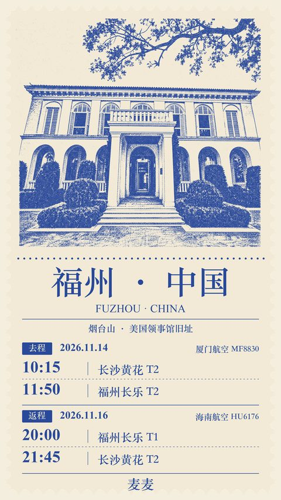
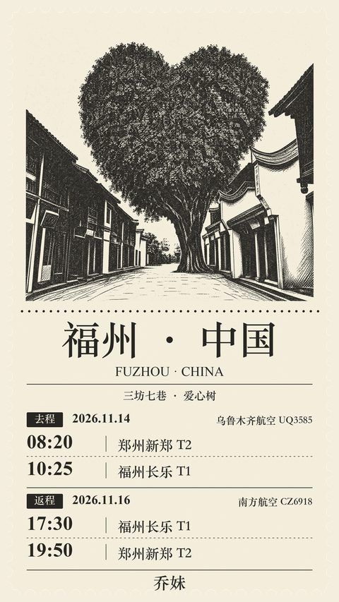
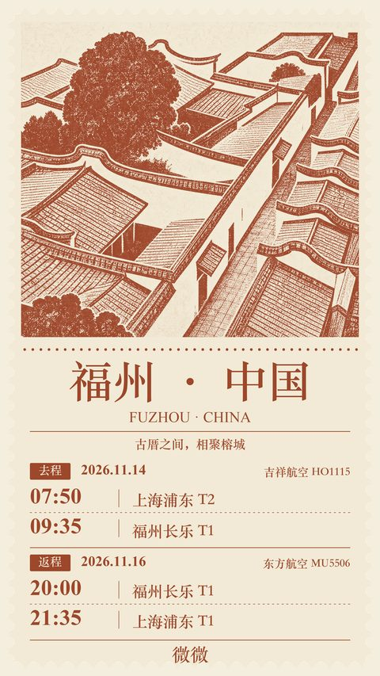
住在这
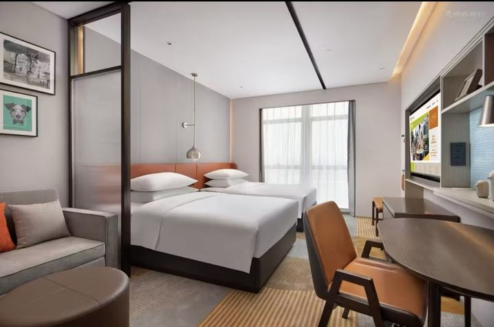
每日行程
11/13 周五 长沙
- S7003 石门县北 → 长沙已购票
02车10A
- 长沙入住（待订）
建议同 16 号的方糖，回来不用重新认路
- 五一广场逛吃
早点睡，明早 7:40 出门
11/14 周六 演唱会
- 出发去黄花机场 T2
打车约 40 分钟
- MF8830 长沙 T2 → 福州长乐 T2已购票
厦航，无餐食，登机前吃早饭
- 午饭：酒店点外卖（簸箕粄等，店待定） 导航
入住后在酒店点外卖，休息到出发去演唱会；兄弟殿大概率取消
- 出发去海峡奥体中心 导航
打车约 13 分钟，16:00 起奥体周边路口视情管制、馆内不能停车，下车点离远一点；或快线到帝封江换 5 号线到东岭站（A/B/C 口到体育场）。早走
- 散场夜宵 + 回酒店
21:50 起奥体周边封路、出租网约车禁止候客，别在门口打车。夜宵两个选法：① 奥体夜市，吃完错开人流再走；② P3 接驳大巴（经烟台山、学生街、白湖亭到福州南，散场 30 分钟内人满即走，入场前先核销换票）到学生街下吃大排档或捞化，离酒店近。滨海快线 22:30 收班，1 号线末班约 23:25
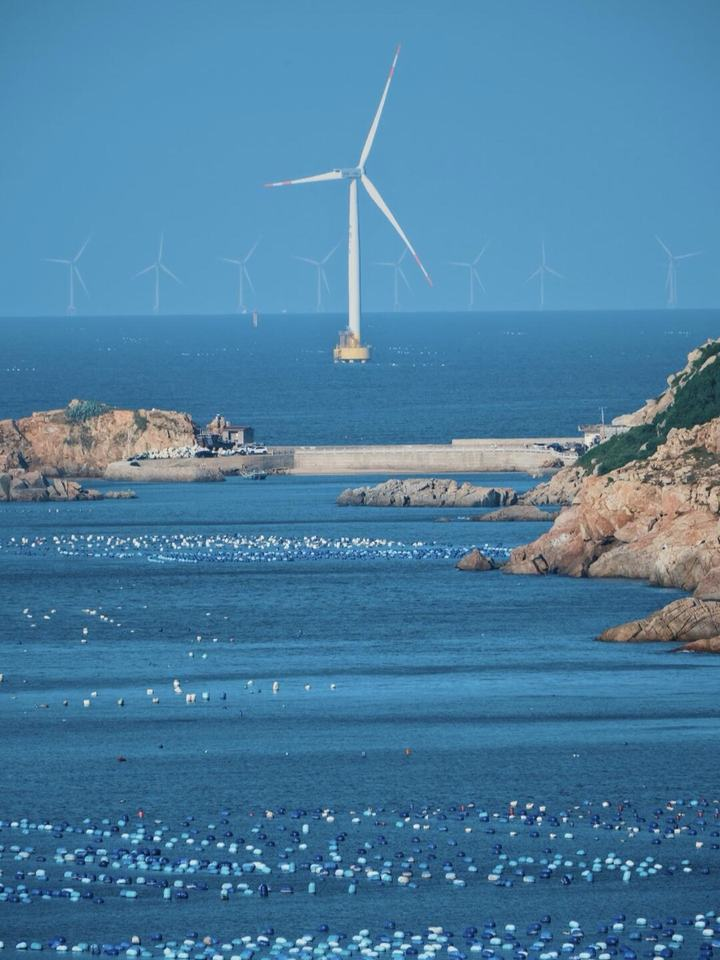
11/15 周日 平潭
- 8:30 出酒店，地铁 1 号线去福州南站
步行约 10 分钟到三叉街站，坐 1 号线往福州火车南站方向约 7 站、20 分钟；9:00 前到站过安检。打车约 25 分钟，三人分摊也行
- D9973 福州南 → 平潭
09:50 到平潭，约 28 分钟
- 北港村（石头厝） 导航
平潭站打车或包车过去，车程约 40 分钟（估算）
- 午饭：岛上海鲜
北港附近吃，12:30 前往南走
- 猴研岛（68 海里，离台湾最近） 导航
从北港过去车程约 50 分钟（估算）；风大，带外套
- 坛南湾海滩 导航
离猴研岛近，逛 30 分钟左右
- 打车回平潭站
车程约 40 分钟（估算），14:55 前到站
- D6514 平潭 → 福州南已购票
15:54 到；07 车 01A / 02F / 06F，刷身份证进站，检票口二层 1
- 福州南 → 鼓山站（1 号线换 2 号线） 导航
南门兜换 2 号线，约 50 分钟；鼓山站 A 口出
- 鼓山落日飞车（十八景小平台） 导航
过鼓山牌坊右边坐景交车（单程 10）到十八景，走到小平台拍缆车+日落；日落约 17:20（估算）；十八景另收门票
- 坐缆车下山看夜景
缆车单程 50；周末可能排队，留出时间
- 上下杭夜景 导航
鼓山站坐 2 号线回市区；太累就跳过直接吃饭
- 晚饭：烤肉（霸腹 / 倔爷）
逛完上下杭过去
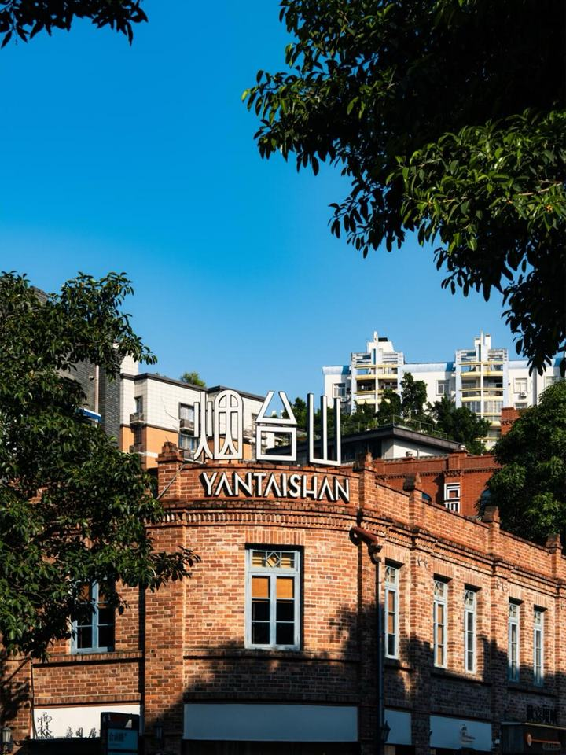
11/16 周一 返程
- 退房，行李寄存前台
- 烟台山（山上洋房、领事馆旧址） 导航
离酒店近，逛完在附近吃午饭
- 乔妹出发去机场（CZ6918 17:30）
回酒店取行李，三叉街坐滨海快线，最晚 14:30 出发；长乐 T1 → 郑州新郑 T2
- 微微出发去机场（MU5506 20:00 回上海）
和麦麦一起坐滨海快线，都在长乐 T1；→ 上海浦东 T1
- 麦麦出发去长乐机场 T1
三叉街坐滨海快线，机场站 B 口到 T1
- HU6176 福州长乐 T1 → 长沙 T2已购票
海航，无餐食，机场先吃晚饭
11/17 周二 回家
- 12:00 前退房
- S7016 长沙 → 石门县北已购票
07车02F
吃和逛
经典必去榜
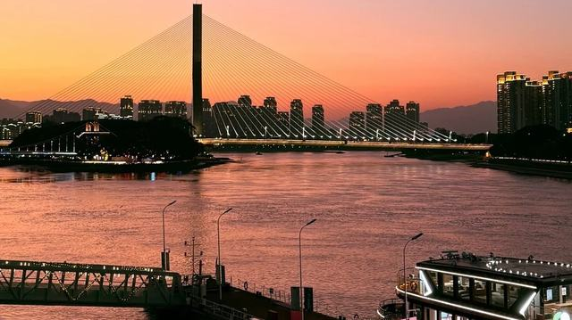
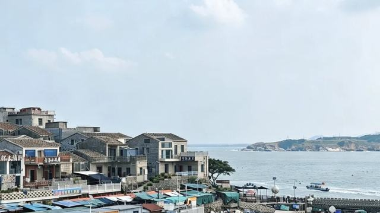
海鲜必吃榜
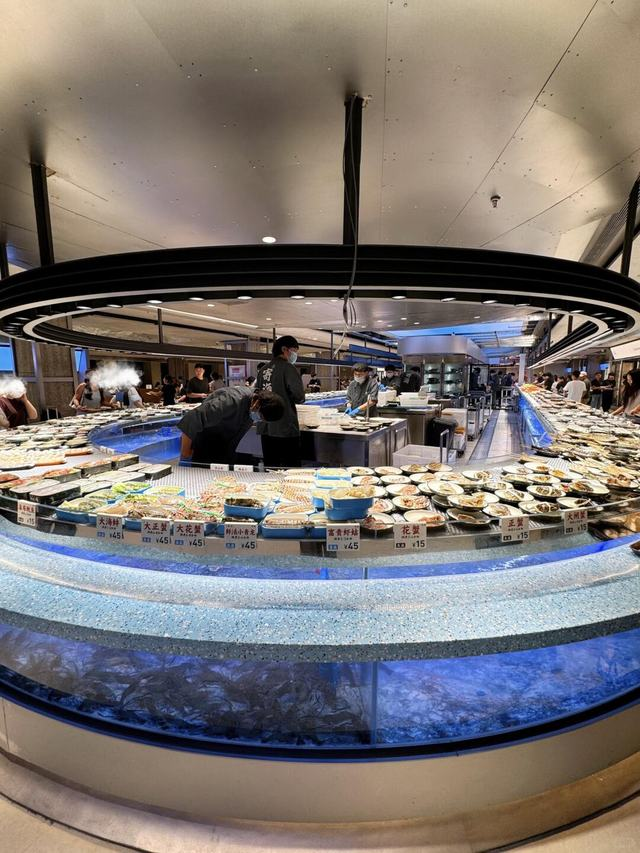
海鲜三选一 · 品类最全、牛肉最好（多帖点名），排队最难，要小程序提前取号；有 45 元/盘高端海鲜，人均可冲 200；有人说海鲜品控不稳。锅底可双拼，推荐 18 罗汉锅底。拿鲍鱼交给小哥剥壳清洗
高德导航 →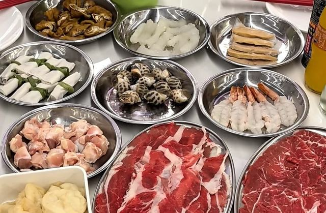
海鲜三选一 · 初代网红，多帖说海鲜最新鲜，牛肉被吐槽，几乎没熟食和生食；大排档风。饭点 200+ 桌，小程序提前取号，14:00 / 20:00 后错峰。花胶鸡锅底被点名最多
高德导航 →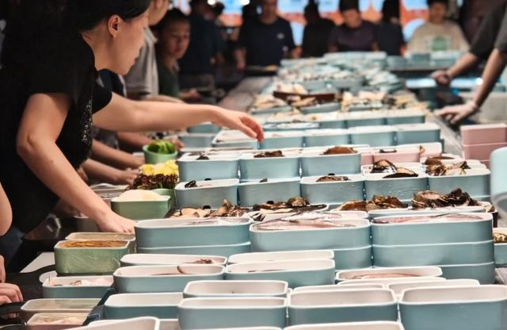
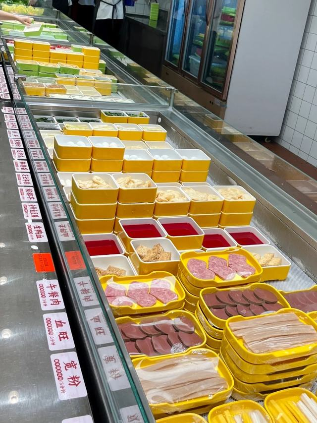
离酒店最近的一家，1 号线白湖亭站。小红书评论说这是新开的最大门店，是否已开业、营业到几点要先确认。另：东街口 D 口 100 米大洋百货有店；金融街万达店被说体验最好
高德导航 →烤肉必吃榜
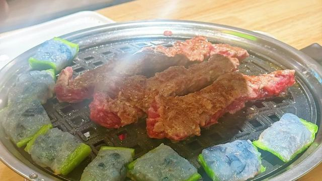
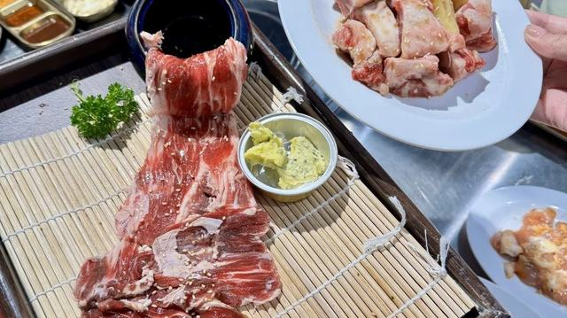
小吃必吃榜
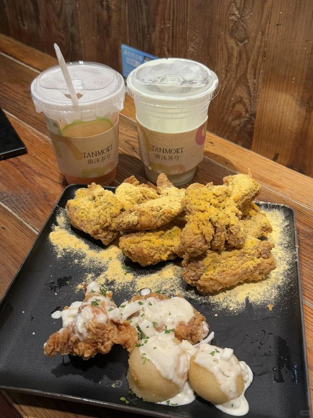
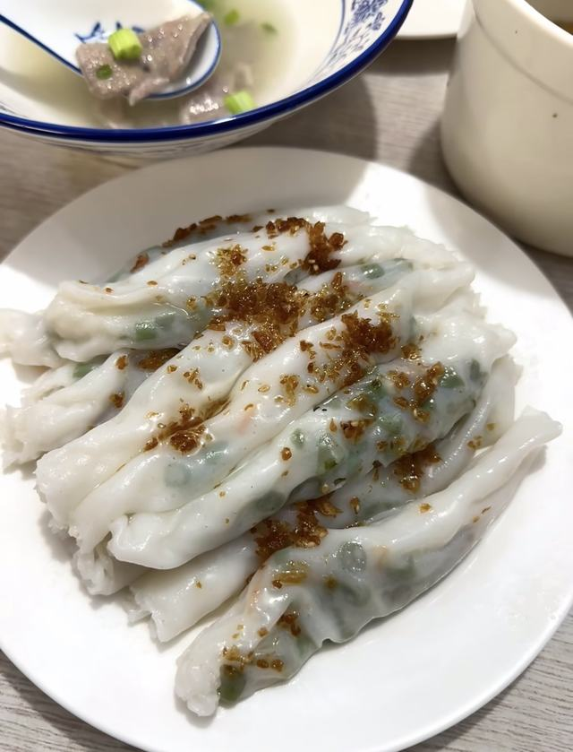
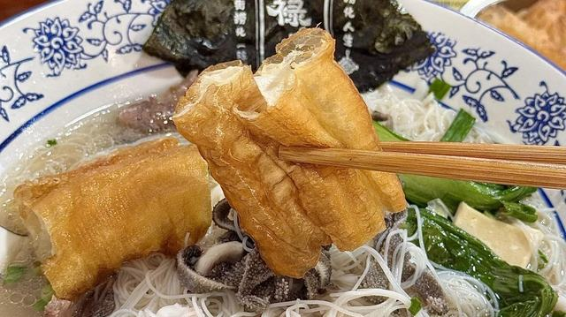
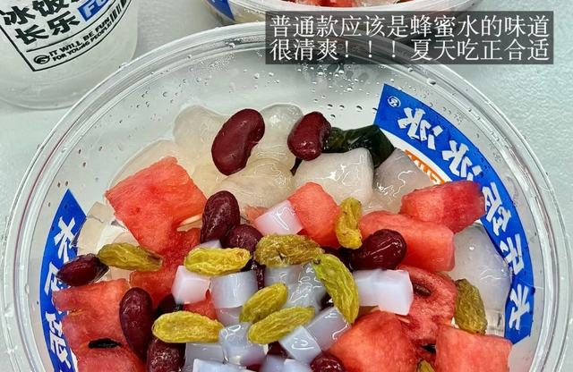
长乐冰饭本家：糯米冰饭+刨冰+西瓜/红豆/葡萄干/椰果，普通款是蜂蜜水味，清爽。小料多、分量足，糯米不算硬。五四 in 象有店，奎桥店被本地人说最爱，中午 12 点后基本满座。炸串评价两极，冰饭就够了；外卖也能点
高德导航 →饮品必喝榜
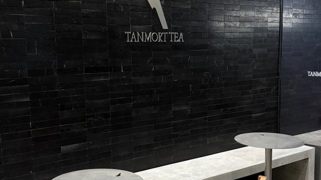
注意事项
✅ 行前待办
- 福州酒店下单（惠庭，人均 246）
- 订 11/13 长沙住宿
- 演出日带雨衣、充电宝
- 大麦上确认入场口
- 11/13 晚给 MF8830 值机
🚨 11/14 演唱会交通管制（福州交警 11/10 通告）
- 21:50 是分界线：东岭路（福湾路–盘屿路）、盘屿路（横龙三路–透浦一路）整段禁行；福湾路、奥体路、建新南路禁止网约车、出租车候客。散场别在门口打车等车
- 16:00 起福湾路东岭路口视情禁直、禁左；馆内停车场不开放
- 去：地铁 5 号线东岭站 A/B/C 口走到体育场，霞镜站 B/C 口到北门；内场票走南侧人行道、地下通道到南广场检票口。接驳大巴 16:30 从三坊七巷、上下杭发车到 P3（离酒店远，我们不坐）
- 回（三选一）：① 地铁东岭 / 霞镜站，末班以当晚公告为准；② P3 大巴经烟台山、学生街、白湖亭地铁站到福州南，散场后 30 分钟内人满即走，白湖亭离三叉街只有一站，最顺路；③ 另一线经宝龙、三坊七巷到福州站
- 大巴入场前先核销换票，散场时信号差
- 票面写「体育场」就去体育场，别走去体育馆
- 天气：13 日阴转小雨、14 日中雨、15 日小雨。带雨衣别带伞，夜里凉多带件外套
来源：畅行876《福州13日起连续三晚管制》（2026-11-11），以现场指引为准
注意事项
- 演唱会 19:00 开演，体育场露天，14 号预报中雨，穿雨衣（通常不让带伞进场）
- 入场前先兑换 / 核销返程接驳车票，散场后信号差
- 滨海快线 22:30 收班，1 号线末班约 23:25
- 唐沫奶茶不要摇匀；崔酱炸鸡点银粟、长乐冰饭，尽量堂食
- 不要去明达路；三坊七巷里的肉燕鱼丸不要吃
- 海鲜火锅饭点排队很凶，先手机取号
行李清单
- 身份证
- 一次性雨衣
- 薄外套 + 短袖叠穿
- 防水的鞋 / 备用袜子
- 充电宝、充电线
- 折叠伞（场外用）
- 优甲乐
- 应援物、纸巾、湿巾